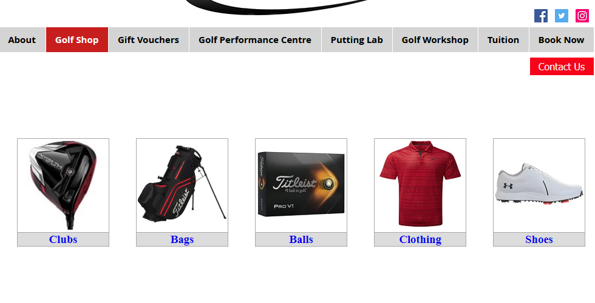
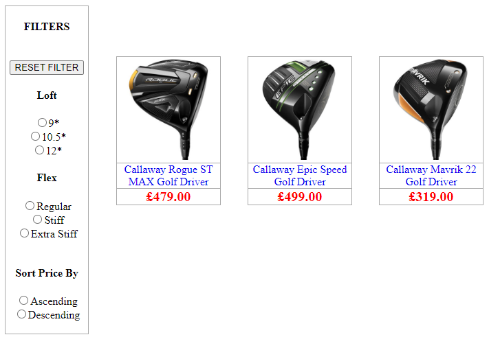

For the Final Project I created an E-Shop; Front-End: HTML, CSS, JavaScript, Ajax and Bootstrap. Back-End: PHP, SQL and a MariaDB. Obviously I cannot publish the full body of work but the following screenshots give a tour of some of the site.
Golf Shop Home
Home page for the Golf Shop showing different categories of items for sale. A simple user interface is built from HTML and CSS. When a user hovers over a category the border and text change colour helping to distinguish user selection.
Product Range
A user has navigated to the Product Range (Driver) page. The ‘FILTERS’ menu uses PHP and SQL to dynamically display filter attributes of the products (loft and flex). When a user clicks a radio button the onChange element in the HTML calls a JavaScript function. Within this function JavaScript with help from AJAX builds a query string that is sent to a PHP page that then selects an SQL statement which displays the filtered products without reloading the webpage.
Product Description
The user clicks on a product (a Callaway Driver) from the Product Range webpage and is presented with information describing the product selected. This page uses HTML, CSS and JavaScript and can be broken down into three sections:
- The main image and slideshow images. A JavaScript function lets the user view a different image of the product. A rollover aspect focuses on selected images and greys out non selected images for better user interaction.
- The customisation of the product (‘VIEW CUSTOM FIT OPTIONS’ button). A JavaScript function shows and hides more drop-down option menus should a user want a more customized product.
- Product descriptions. A JavaScript function on the tab menus focuses on the description selected and greys out the other menu items. The information displayed in each menu item uses a PHP file handling function that is linked to a text file for that specific description.

Product Description Responsive
The description webpage is also coded so it can work on a mobile device. The picture below (has been edited so it reads from left to right) shows the page on a screen size of 300 pixels wide.

Admin Section
To update and manage the shop an Admin Section was created. A user has CRUD operations on all Products for sale and also has these operations for managing Stock Inventory, Customer Orders and Sales Data.
Change Password
For the Change Password webpage, I used a Bootstrap JavaScript library which gives the page a professional style and design. A user inputs their new password twice, the first input box to create the second to confirm. On pressing the Submit button the passwords are validated by checking the password criteria has been met. If successful the new password is hashed by the password_hash() function and updated to the database.

Change Password-error
If the password doesn’t meet the password criteria or the two passwords do not match an error message is displayed and the user must fill in the form until they are successful.